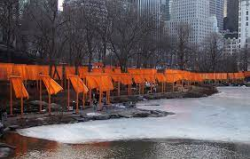

The Gates. New York City, US. Christo and Jeanne-Claude. 1979-2005 CE Mixed- media Installation.
- Form
- Installation of 7,503 “gates” of free-hanging saffron-colored fabric panels
- The installation framed all the pathways in Central Park in New York City, a nineteenth-century park originally designed by Olmsted and Vaux
- The work was mounted in the winter so the colors would have maximum impact; the trees were bare and the gates easily visible
- The 16-foot-tall gates friend a continuous river of color
- The work covered 23 miles of footpaths
- Context
- Christo is Bulgarian-born; Jean-Claude was of French descent, born in Morocco
- The work was put on hold for many years, but installed a few years after 9/11
- Temporary installation: 16 days
- After the exhibition closed, the materials were recycled
- Spectators walked through the gates to see ever-changing views of the park